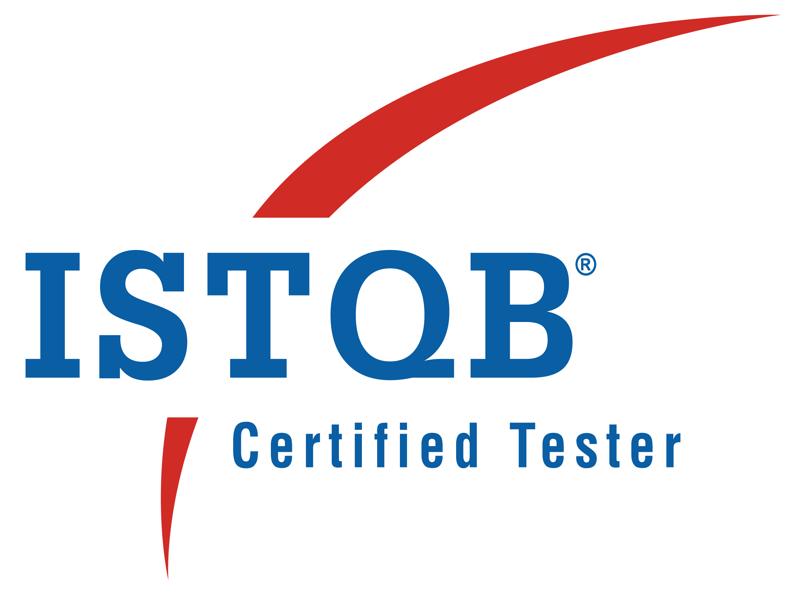

Bringing a wealth of expertise in ensuring the reliability and functionality of digital solutions, proficiency in implementing Agile and Scrum methodologies, leading teams, and collaborating effectively to drive projects to success has been demonstrated throughout the career. A strong technical background, including a master’s degree in Data Analytics and a Bachelor's in Electronics and Communication Technology, coupled with certifications in ISTQB and Salesforce, underscores the commitment to excellence. Excelling in creating and implementing test strategies, leveraging automation tools and fostering a culture of quality within teams is a consistent practice. There is a passion for continuous learning and staying updated with emerging technologies, and a readiness to contribute significantly to any testing endeavors and drive innovation in the digital landscape.
